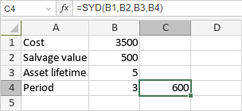

SYD Funkcija
SYD funkcija je jedna od finansijskih funkcija. Koristi se za izračunavanje amortizacije sredstva za određeni obračunski period pomoću metode sume cifara godina.
Sintaksa
SYD(cost, salvage, life, per)
SYD funkcija ima sledeće argumente:
| Argument | Opis |
|---|---|
| cost | Trošak sredstva. |
| salvage | Ostala vrednost sredstva na kraju njegovog veka trajanja. |
| life | Ukupan broj perioda u toku trajanja sredstva. |
| per | Period za koji želite da izračunate amortizaciju. Vrednost mora biti izražena u istim jedinicama kao life. |
Napomene
Kako primeniti SYD funkciju.
Primeri
Slika ispod prikazuje rezultat koji vraća SYD funkcija.
